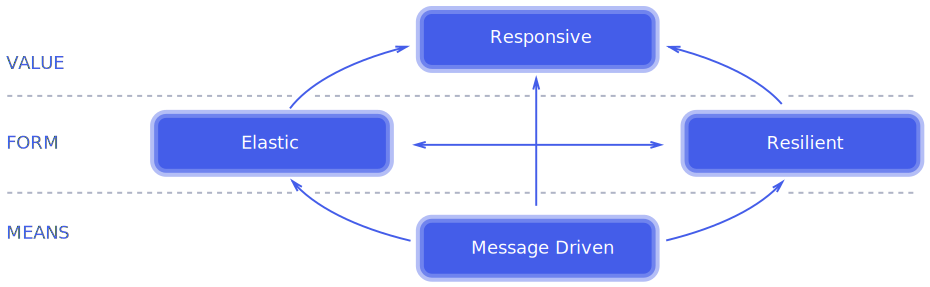

Devops
“Hope is not a strategy.”
Devops
Problemas comunes
- Despliegue de Software manual
- Desplegar a un ambiente Productivo por primera vez solamente cuando se termina el Desarrollo
- Configuración manual de ambientes, incluyendo Producción
- Falta de Visibilidad de Problemas: Monitoreo
- Inseguridad
¿Qué es DevOps?
- ¿Es un rol?
- ¿Es un equipo aparte?
- ¿Es una tecnología o herramienta?
- ¿Es combinar Desarrollo y Operaciones?
- ¿Es automatización de todo?
- ¿Es una estrategia que se puede aplicar siempre?
DevOps
Flujo de Valor
Valores DevOps
Conceptos
Desarrollo Ágil
Antipatrones de Manejo de Software (CD)
CI/CD/CD

Pipeline de Software (CD)
Retroalimentación (CD)
Aprendizaje Continuo y Experimentación
Kaizen

Aprendizaje Continuo y Experimentación
Ciclo de DemingAprendizaje Continuo y Experimentación
Blameless postmortems:

Arquitectura de Sistemas (Release It)
Reactive Manifestó
Los sistemas grandes están compuestos de sistemas más pequeños y dependen de las propiedades reactivas de estos.
12 Factor app
I. Codebase
One codebase in revision control, many deploys
II. Dependencies
Explicitly declare and isolate dependencies
III. Config
Store config in the environment
IV. Backing services
Treat backing services as attached resources
12 Factor app
V. Build, release, run
Strictly separate build and run stages
VI. Processes
Execute the app as one or more stateless processes
VII. Port binding
Export services via port binding
VIII. Concurrency
Scale out via the process model
12 Factor app
IX. Disposability
Maximize robustness: fast startup and graceful shutdown
X. Dev/prod parity
Keep "environments" as similar as possible
XI. Logs
Treat logs as event streams
XII. Admin processes
Run admin/management tasks as one-off processes
Ganado vs Mascotas
Servidores Fénix vs Copo de nieve

Ejercicio
En que diferimos? Como podríamos mejorarlo?
Dimensiones del Software
Dimensiones
Infraestructura como código
Configuración como código
Aplicaciones como código
Datos como código
Mecanismos Administración
Versionamiento
Análisis estático
Pruebas
Auditoria de Seguridad
Administración de la Infraestructura
Infraestructura como Código


Beneficios
Respuesta rápida a cambio de requerimientos Consolidado Hardware estandarizadoTaller Infraestructura como Código
- Instalar Terraform
- Leer Introducción a Terraform
- Instalar Azure Cli
- Leer Tutorial Construcción
- Crear una maquina virtual en azure: ejemplo
Crear:
- 2 máquinas Servidor (Producción, Integración)
- 1 máquina Jenkins
- 1 Balanceador conectado a máquina Producción
Probar:
- Ssh a Jenkins
- Ssh a Servidores
- Ssh de Jenkins a Servidor
Administración de la Configuración
Configuración como Código


Taller Configuración como Código
Administración del Código
Administración de los Datos
Datos como Código


Integración Continua
Pipeline de Software
Manejo del proceso de despliegue
Taller Pipeline
Mejora Continua y Operación
Monitoreo
Retroalimentación
Aprendizaje Continuo y Experimentación
Seguridad Informática
Monitoreo
- Alerts
- Tickets
- Logging
SRE - Site Reliability Engineering
“SRE is what you get when you treat operations as if it’s a software problem”Google SRE
Aproximación normal
Sysops
Desarrollo vs Operaciones
“Queremos desplegar lo que sea, cuando sea, sin impedimentos”VS
“No queremos cambiar nada una vez este funcionando el sistema”
Aproximación normal
Un equipo tradicional de operaciones escala linealmente con el tamaño del servicio.
Aproximación SRE
Uso del tiempo:
Dev Ops
Alta dependencia de automatización vs esfuerzo humano.

Un equipo SRE escala de forma sublineal
Principios SRE
- Enfoque constante en Ingeniería (Blame-free)
- Búsqueda de velocidad de cambio sin violar el SLO (Error Budget)
- Monitoreo (Alarmas accionables)
- Respuesta a Emergencias (Latencia Humana)
- Manejo de Cambios
- Previsión de demanda y capacidad
- Aprovisionamiento
- Eficiencia y Rendimiento